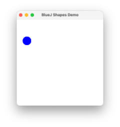
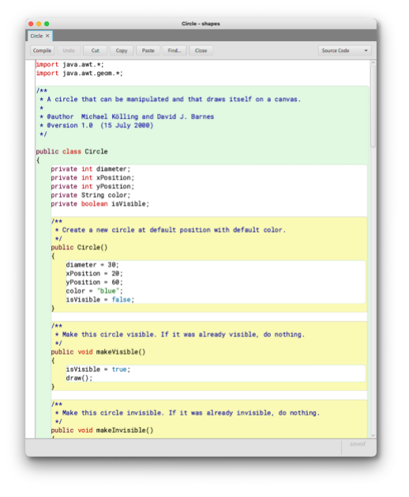

BlueJ¶
Wir lernen unsere Entwicklungsumgebung kennen, die wir in den ersten Wochen für das Programmieren nutzen werden. Es handelt sich um BlueJ. BlueJ wurde extra für Studierende entwickelt, die Programmieren lernen. Das J in BlueJ steht für Java. Mit BlueJ wird also das Programmieren mit Java gelernt. Eine wesentliche Idee hinter der Entwicklung von BlueJ bestand darin, gleich am Anfang mit der objektorientierten Programmierung zu beginnen, d.h. sich gleich mit Klassen und Objekten zu beschäftigen. Das passiert häufig erst recht spät in der Programmierausbildung.
Wir geben zunächst einen groben Überblick und lernen dabei in kurzer Zeit viele neue Konzepte und Begriffe kennen. Aber keine Sorge, mit all diesen Konzepten beschäftigen wir uns jeweils noch ganz ausführlich.
Objekte und Klassen¶
Wenn wir uns die Welt betrachten, dann besteht diese aus lauter Objekten, die miteinander in Beziehung stehen. Man ganz konkret über bestimmte Objekte sprechen:
- „das ist ein schöner Stuhl“
- „das ist ein teurer Tisch“
- „das Auto ist blau“
oder ganz allgemein über eine Klasse von Objekten:
- „InformatikerInnen sind Nerds“
- „Computer machen immer, was sie wollen“
- „die Bahnen kommen immer zu spät“
In der Welt des objektorientierten Programmierens sind die Klassen die "Muster" oder die "Bauanleitungen" für konkrete Objekte. Mit Klassen beschreiben wir die allgemeinen Eigenschaften, die für alle Objekte dieser Klasse gelten. Klassen beschreiben
- eine Struktur der Objekte (das sind die sogenannten Objektvariablen) und
- ein Verhalten dieser Objekte (das sind die sogenannten Objektmethoden).
Insgesamt sprechen wir bei der Struktur und dem Verhalten von den Eigenschaften einer Klasse. Eine Klasse ist ein Datentyp und jeder "Wert"1 ist ein konkretes Objekt von diesem Typ. Von einer Klasse können wir beliebig viele Objekte erzeugen.
Objekte werden aus Klassen erzeugt. Eine Klasse beschreibt die Art und Weise, den Aufbau von Objekten. Objekte sind die speziellen Instanzen einer allgemeinen Klasse.
Ein typisches Beispiel ist Auto. Ein Auto kann fahren, hat eine Farbe, ist von einer bestimmten Marke, hat einen bestimmten Motor, eine bestimmte Anzahl von Türen und so weiter. Das sind alles Eigenschaften eines Autos. Diese Eigenschaften werden in einer Klasse definiert und beschreiben ein Auto im Allgemeinen. Davon gibt es dann konkrete Objekte: ein roter VW Golf mit 5 Türen, ein blauer Toyota mit 3 Türen usw.
Eine Klasse beschreibt also alle möglichen Objekte, die von dieser Klasse erstellt werden können. Die Eigenschaften der Objekte werden in
- Objektvariablen und
- Objektmethoden
beschrieben. Beispiele dafür zeigen zunächst die folgenden Abbildungen:
Objektvariablen¶
In der Klasse Stuhl ist beschrieben, dass jeder Stuhl (jedes Stuhl-Objekt)
- eine
Inventarnummerhat, - in einem
Raumsteht, - eine bestimmt
Anzahl Beinehat und - einen
Status, der beschreibt, ob er frei oder besetzt ist.
Diese Eigenschaften werden als Objektvariablen definiert. Jedes Objekt der Klasse Stuhl hat seinen eigenen Objektvariablen, nämlich genau die vier. Das bedeutet, alle Objekte der Klasse Stuhl haben die gleichen Eigenschaften, aber die konkreten Werte dieser Objektvariablen sind von Stuhl(-Objekt) zu Stuhl(-Objekt) unterschiedlich. Vier konkrete Stuhl-Objekte stuhl1, stuhl2, stuhl3 und stuhl4 sind in der Abbildung dargestellt.
Objektmethoden¶
Jedes Objekt der Klasse Stuhl hat jeweils konkrete Werte für die Objektvariablen. Zum Beispiel hat das Objekt stuhl1 den Wert 1 für die Inventarnummer, den Wert 123 für den Raum, den Wert 4 für Anzahl Beine und den Wert frei für Status. Wie können diese Werte geändert werden? Die Antwort ist: durch Objektmethoden. Objektmethoden beschreiben das Verhalten eines Objektes. Z.B. kann der Status dadurch geändert werden, dass man sich auf den Stuhl setzt oder wieder aufsteht. Solche Tätigkeiten bzw. so ein Verhalten lassen sich durch Obejktmethoden beschreiben. Darin wird etwas getan und zwar hauptsächlich die Werte von Objektvariablen geändert oder einfach ausgelesen. Mögliche Objektmethoden wären also
- aufstehen (den
Statusinfreiändern), - hinsetzen (den
Statusinbesetztändern), - umziehen (den
Raumändern), - inventarisieren (die
Inventarnummerauslesen), - zusammenkrachen (die
Anzahl Beineändern) usw.
Ein erstes Beispiel mit BlueJ¶
Wir öffnen BlueJdann im Menü auf Project --> Open Project. Im examples-Ordner von BlueJ finden wir den Ordner shapes. Wir wählen den Ordner und klicken auf Open. Es erscheint:
Klicken Sie den Button Compile.
Objekt erzeugen¶
Klicken Sie dann mit der rechten Maustaste auf das orangene Kästchen Circle und wählen aus dem Kontextmenü
new Circle()
Den Namen circle1 können Sie einfach mit Ok bestätigen. Sie haben soben Ihr erstes Objekt erzeugt!
Das orangene Kästchen, auf das Sie mit der rechten Maus geklickt haben, repräsentiert die Klasse Circle. Das rote Kästchen links unten mit dem Namen circle1 repräsentiert ein Objekt dieser Klasse.
Konvention: Klassennamen beginnen immer mit Großbuchstaben und Objektnamen immer mit einem kleinen Buchstaben.
Methoden aufrufen¶
Klicken Sie nun mit der rechten Maustaste auf das rote Kästchen circle1 (also auf das Objekt) und wählen dann
void makeVisible()
aus. Es erscheint:

makeVisible() ist eine Methode. Genauer gesagt, handelt es sich um eine Objektmethode. Als wir darauf geklickt haben, haben wir diese Methode aufgerufen.
Übung Methoden aufrufen
Rufen Sie (auch mehrmals) die Methoden
makeLeft(),makeRight(),makeUpundmakeDown()
auf. Rufen Sie auch
makeInvisible()und dann wiedermakeVisible()auf.
Methoden erkennen wir an den runden Klammern () hinter dem Namen. In diesen Klammern kann auch ein Wert stehen. Dazu kommen wir jetzt, zu den sogenannten Parametern.
Parameter¶
Nun rufen wir die Methode moveHorizontal(int distance) auf. Es erscheint ein Dialog:

geben Sie in das Eingabefeld eine Zahl ein, z.B. 50 und klicken OK. Der Kreis bewegt sich horizontal um 50 Bildschirmpunkte nach rechts. Wir übergeben dem Methodenaufruf einen Wert (hier: der Wert 50).
Klicken Sie mit der rechten Maustaste auf das orangene Kästchen Circle1 (also auf die Klasse Circle) und wählen Sie Open Editor. Es erscheint:

Das Fenster, das sich öffnet, ist der sogenannte Editor. Darin sehen wir die Implementierung der Klasse Circle. So sieht ein Java-Programm aus. Wir kommen zu den Details später. Zunächst suchen wir den folgenden gelb hinterlegten Block (ab Zeile 812):
/**
* Move the circle horizontally by 'distance' pixels.
*/
public void moveHorizontal(int distance)
{
erase();
xPosition += distance;
draw();
}
Bei den ersten drei Zeilen
/**
* Move the circle horizontally by 'distance' pixels.
*/
handelt es sich um einen Kommentar (genauer gesagt, um einen JavaDoc-Kommentar). Wir kommen bald zu Kommentaren. Jetzt geht es uns zunächst nur um diese Zeile:
public void moveHorizontal(int distance)
Dies ist die sogenannte Signatur der Methode moveHorizontal. moveHorizontal ist der Name der Methode und distance ist der Name des Parameters der Methode. Vor dem Namen des Parameters steht ein Datentyp. In diesem Fall ist es der Datentyp int.
Datentypen¶
int steht für Integer und bedeutet ganze Zahl (also auch negative Zahlen). Wir werden uns ausgiebig mit Datentypen beschäftigen. In dem Beispiel int distance steht der Datentyp int dafür, dass wir der Methode moveHorizontal bei dem Aufruf einen ganzzahligen Wert übergeben müssen.
Rufen Sie die Methode moveHorizontal auf und übergeben Ihr einen negativen Zahlenwert!
Wenn wir uns die Java-Implementierung der Klasse Circle nochmal genauer anschauen, dann sehen wir, dass die Methoden entweder keinen Parameter haben:
public Circle()
public void makeVisible()
public void makeInvisible()
public void moveRight()
public void moveLeft()
public void moveUp()
public void moveDown()
private void draw()
private void erase()
, dann muss dem Aufruf der Methode kein Wert übergeben werden.
Oder die Methode erwartet einen Parameterwert und dieser Wert muss einer ganzen Zahl entsprechen:
public void moveHorizontal(int distance)
public void moveVertical(int distance)
public void slowMoveHorizontal(int distance)
public void slowMoveVertical(int distance)
public void changeSize(int newDiameter)
Außerdem gibt es noch eine Methode, die als Parameterwert einen String erwartet. String ist ebenfalls ein Datentyp. Dieser Datentyp steht aber nicht für ganze Zahlen, sondern für Zeichenketten.
public void changeColor(String newColor)
Zeichenketten (
String) schreiben wir in Java in doppelten Anführungszeichen"Zeichenkette".
Rufen Sie die Methode changeColor auf und übergeben Sie als Parameterwert "red". Probieren Sie auch die Werte "yellow", "green", "magenta" und "black" aus.
Fragen
- Was passiert, wenn Sie nur
redschreiben? - Was passiert, wenn Sie
"pink"schreiben? - Was passiert, wenn Sie
"blau"schreiben? - Was passiert, wenn Sie
"hallo"schreiben?
Mehrere Objekte¶
Von unserer Klasse Circle haben wir bereits ein Objekt circle1 erzeugt. Von einer Klasse lassen sich beliebig viele Objekte erzeugen! Alle diese Objekte haben dieselben Eigenschaften! Das bedeutet, dass all diesen Objekten, die Sie erzeugen, die gleichen Objektmethoden zur Verfügung stehen (und auch die gleichen Objektvariablen).
Aufgabe
Erzeugen Sie fünf Objekte von der Klasse Circle. Weisen Sie allen Objekten unterschiedliche Farben zu! Sorgen Sie dafür, dass sich die Objekte in der Darstellung nicht überdecken!
Wie Sie sehen, haben zwar alle Objekte dieselben Eigenschaften (dieselben Objektmethoden und dieselben Objektvariablen). Aber wir können ihnen jeweils unterschiedliche Werte zuweisen, so dass einige Circle-Objekte z.B. rot oder blau oder schwarz sind und auch jeweils andere Positionen haben. Wir schauen uns im Folgenden an, dass jedes Objekt einen eigenen Zustand hat.
Der Zustand eines Objektes¶
Klicken Sie mit der rechten Maustaste auf ein Objekt und wählen Sie Inspect. Es öffnet sich das folgende Fenster:

Lassen Sie dieses Inspektionsfenster geöffnet und ändern Sie die Farbe des Objektes. Was beobachten Sie im Inspektionsfenster?
Das Inspektionsfenster zeigt den Zustand eines Objektes. Der Zustand wird durch die Werte der Objektvariablen beschrieben. Schauen wir uns die Java-Implementierung der Klasse Circle an, dann finden wir in den Zeilen 13-17 folgende Anweisungen:
private int diameter;
private int xPosition;
private int yPosition;
private String color;
private boolean isVisible;
Das sind die Objektvariablen der Klasse Circle. Jedes Objekt der Klasse Circle besitzt seine eigenen Objektvariablen. Jede Variable hat einen Wert. Die Variablen diameter, xPosition und yPosition haben als Wert eine ganze Zahl. Diese Zahl gibt z.B. für diameter die Größe des Umfanges des Kreises an. Der Wert für xPosition beschreibt den Wert auf der x-Koordinate und der Wert von yPosition beschreibt den Wert auf der y-Koordinate zur Darstellung des Kreises.
Der Wert der Objektvariablen color beschreibt die Farbe des Kreises als Zeichenkette ( String). Die Objektvariable isVisible ist von einem Datentyp, den wir noch nicht kennen: boolean. Diese Variable kann nur zwei verschiedene Werte annehmen: true (sichtbar) oder false (nicht sichtbar).
Die Werte der Variablen können mithilfe der Objektmethoden geändert werden.
Fragen
- Welche Methode müssen Sie aufrufen, um den Wert der Variablen
colorzu ändern? - Welche Methode müssen Sie aufrufen, um den Wert der Variablen
diameterzu ändern? - Welche Methode(n) müssen Sie aufrufen, um den Wert der Variablen
isVisiblezu ändern? - Welche Methode(n) müssen Sie aufrufen, um den Wert der Variablen
xPositionzu ändern? - Welche Methode(n) müssen Sie aufrufen, um den Wert der Variablen
yPositionzu ändern?
Die Kombination der Werte aller Objektvariablen beschreibt den Zustand eines Objektes.
Aufgabe
Erzeugen Sie mehrere Objekte der Klasse Circle! Öffnen Sie für alle Objekte jeweils das Inspektionsfenster. Ändern Sie für unterschiedliche Objekte die Werte von Objektvariablen durch Methodenaufrufe und beobachten Sie die jeweiligen Zustandsänderungen.
Zusammenfassung¶
Wir haben viele neue Begriffe kennengelernt:
- Klassen und Objekte,
- Methoden, Methodenaufrufe,
- Parameter,
- Datentypen (
int,String,boolean), - Objektvariablen, Objektmethoden,
- Zustand eines Objektes.
Das ist ganz schön viel auf einmal! Diese Begriffe werden wir in den kommenden Wochen verwenden und vertiefen. Zunächst zum Abschluss noch eine "kleine" Aufgabe zum Entspannen. Zeichnen Sie dieses Bild:

Success
Wir kennen schon Klassen, Objekte, Objektvariablen, Objektmethoden, Parameter, einige Datentypen, können Objekte erzeugen und Objektmethoden aufrufen. Super!
-
In der objektorientierten Programmierung unterscheiden wir sehr genau zwischen Objekten und Werten. Werte sind soetwas wie
4,true,5.5usw. Solche Werte haben kein Verhalten. Objekte haben aber ein Verhalten (die Objektmethoden - siehe z.B. fürStringdie MethodencharAt(),length(),substring()). Wir werden sehr detailliert auf die Unterschiede zwischen Werten und Objekten eingehen. Die Datentypen, die wir erstellen, sind sogenannte Referenztypen. Eine Variable von so einem Referenztyp zeigt auf (referenziert) ein Objekt. ↩ -
Um sich die Zeilennummern anzeigen zu lassen, öffnen Sie das
BlueJ-Menü und wählenPreferences. Unter dem ReiterEditorfinden SieDisplay line numbers. Setzen Sie dort das Häkchen. ↩